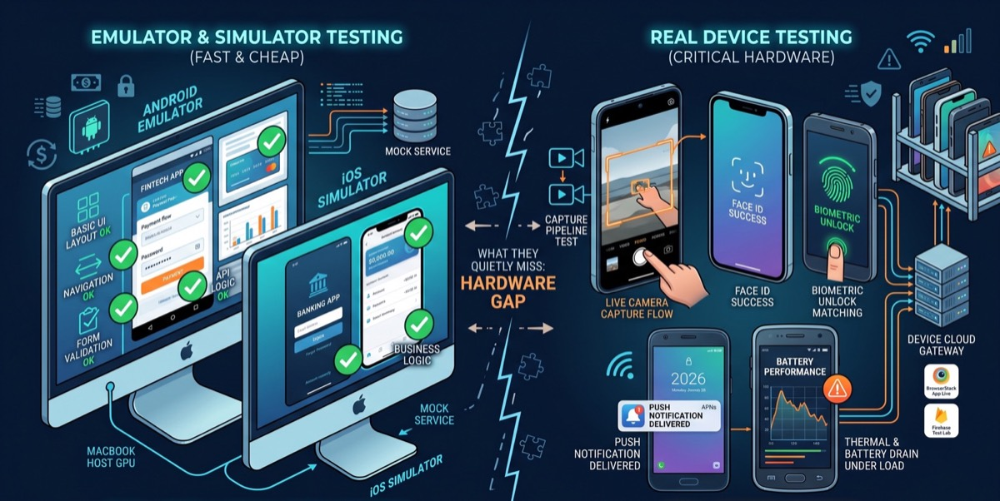

Testiranje mobilnih aplikacija na emulatorima i simulatorima: šta zaista hvataju, a šta tiho propuštaju
Praktičan pogled na testiranje mobilnih aplikacija na Android emulatorima i iOS Simulatoru, i na česte zablude zbog kojih stvarne greške prođu.
Tim objavi build nakon kompletnog regresionog testiranja na Android emulatoru i iOS Simulatoru, sve zeleno, a u roku od jednog dana stignu prijave o padovima aplikacije na stvarnim telefonima, pokvarenom toku kamere i push notifikaciji koja nikada ne stigne. Ništa iz test plana nije preskočeno. Problem je u tome što „testirano" i „testirano na emulatoru" nisu ista tvrdnja, a jaz između njih je širi — i konkretniji — nego što većina QA procesa uzima u obzir.

Emulator i simulator nisu ista stvar
Ovi izrazi se koriste kao sinonimi, ali Android emulator i iOS Simulator rade na suštinski različitim principima, i ta razlika ima direktne posljedice po testiranje. Android emulator zaista emulira hardver: pravi virtuelni ARM (ili x86) procesor i u realnom vremenu prevodi instrukcije za njega. Zato se može podesiti sa tačno određenim ograničenjem RAM-a ili brojem jezgara procesora, pa se donekle ponaša kao stvaran uređaj sa ograničenim resursima — po cijenu toga da je sporiji od telefona koji oponaša.
iOS Simulator uopšte ne emulira hardver. Pokreće kod vaše aplikacije kompajliran direktno za procesor vašeg Mac-a, unutar simuliranog iOS softverskog okruženja. Zato je brz — nema prevođenja instrukcija — ali je zato i strukturno nesposoban da vam kaže bilo šta o tome kako se aplikacija ponaša na Apple-ovom stvarnom čipu, pri termalnom usporavanju ili pod pritiskom na memoriju u stvarnom iOS upravljanju memorijom. To što build na simulatoru prođe test performansi ne dokazuje ništa; testirate svoj Mac, a ne iPhone.
Zabluda: „ako prođe na emulatoru, proći će i na uređaju"
Ovo je najskuplja zabluda, jer je obično tačna dovoljno često da djeluje sigurno. Emulatori i simulatori ne mogu reprodukovati ponašanje mreže mobilnog operatera, stvarno prebacivanje između Wi-Fi mreža, politike gašenja aplikacija u pozadini na Android verzijama koje su proizvođači prilagodili, niti stvarno ponašanje baterije i temperature. Skrolovanje koje na emulatoru djeluje glatko zato što posao radi GPU host računara može vidno da šteka na Android telefonu srednje klase starom dvije godine. Ništa od ovoga se ne pokaže dok isti build ne pokrene stvaran uređaj — idealno niz stvarnih, ponekad i starijih uređaja.
Zabluda: „simulator može da testira sve osim sirove brzine"
QA timovi često tretiraju iOS Simulator kao funkcionalno kompletan, a nepotpun samo po pitanju performansi. Nije tako. Simulator ne može da pristupi kameri uživo (možete mu dati samo fotografiju iz galerije, a ne testirati stvarni tok snimanja), ne može da proizvede stvarne podatke senzora pokreta iz akcelerometra ili žiroskopa, i ne može da primi prave push notifikacije preko APNs-a na način na koji ih prima uređaj — payload možete simulirati lokalno, ali ne prolazite kroz stvarnu putanju isporuke. Face ID i Touch ID u Simulatoru postoje samo kao opcija u meniju koju sami aktivirate; stvarna logika biometrijskog poređenja se nikada ne izvrši. Svaka aplikacija sa korakom kamere, interakcijom zasnovanom na pokretu, stvarnom isporukom push notifikacija ili biometrijskom prijavom ima značajan dio ponašanja koji test plan zasnovan samo na simulatoru jednostavno ne može da vidi.
Konkretan način da podijelite test plan
Umjesto da „pokreni na emulatoru" tretirate kao jednu fazu testiranja, korisno je vrste testova eksplicitno dodijeliti okruženju koje ih zaista može potvrditi:
Emulator / Simulator (brzo, jeftino, na svakom commitu)
- UI raspored na različitim veličinama ekrana i verzijama OS-a
- Poslovna logika, navigacija, validacija formi
- API ugovor i mockovani mrežni odgovori
- Osnovne provjere pristupačnosti (labele, kontrast)
Stvaran uređaj / device cloud (prije merge-a u release granu)
- Snimanje kamerom, biometrijska prijava, prave push notifikacije
- Ponašanje baterije, memorije i temperature pod opterećenjem
- Performanse na uređaju niže/srednje klase, ne samo na flagship-u
- Sve pod čim se sama aplikacija može ponašati drugačije
(vidi napomenu o bezbjednosti ispod)Servisi poput Firebase Test Lab-a, BrowserStack App Live-a i AWS Device Farm-a postoje upravo zato da druga kolona bude pristupačna bez fizičke police sa uređajima, i vrijedi ih uključiti u budžet čak i u malom timu.
Zanemaren ugao: aplikacije se ponašaju drugačije kada otkriju emulator
Ovo iznenadi čak i timove koji vode računa o bezbjednosti. Mnoge aplikacije — sve koje imaju zaštitu od prevara, zaštitu od neovlašćenih izmjena (anti-tamper) ili SDK za oglase — aktivno otkrivaju kada rade na emulatoru i u skladu s tim mijenjaju sopstveno ponašanje: isključuju neku funkciju, odbijaju da se učitaju ili tiho rade slabije. To znači da greška koju ne možete reprodukovati na emulatoru može biti sasvim stvarna na uređaju, a funkcija koja na emulatoru „radi sasvim dobro" možda izvršava drugu putanju u kodu od one kojom idu stvarni korisnici. Emulatori obično ne mogu ni da instaliraju build na način na koji ga korisnici zaista dobijaju — preko prodavnice aplikacija — pa ono što se testira nije uvijek ono što se objavljuje.
Zamke i ograničenja
Ništa od ovoga nije argument da se odustane od emulatora i simulatora — oni su zaista pravi alat za brzu iteraciju, provjeru rasporeda na mnogo veličina ekrana i većinu testiranja poslovne logike, a pokretanje svega na stvarnim uređajima na svakom commitu je sporo i skupo. Rizik je u tome da se prolaz na emulatoru za gore navedene kategorije tretira kao jednak prolazu na uređaju. Vrijedi imati na umu i da testiranje na „stvarnom uređaju" ima sopstvenu slijepu tačku: device farm vam daje određeni telefon, verziju OS-a i region, a ne punu fragmentaciju koju ima vaša stvarna baza korisnika, pa jaz sužava, ali ga ne zatvara.
Šta dalje
Eksplicitno podijelite svoj skup testova, kao gore, i označite koji skupovi smiju da se pokreću samo na emulatoru, a koji prije objave moraju proći kroz provjeru na stvarnom uređaju. Dodajte provjere kamere, biometrije, push notifikacija i performansi na slabijim uređajima na listu za stvarne uređaje ako već nisu tamo. Ako vaša aplikacija ima detekciju prevara, anti-tamper zaštitu ili SDK-ove za oglase, eksplicitno testirajte na stvarnom uređaju kako biste potvrdili da ne dobijate lažne rezultate zbog ponašanja protiv emulacije. Na kraju, ako budžet dozvoljava, uvedite u rotaciju bar jedan stvaran Android uređaj niže/srednje klase i jedan stariji iPhone — laboratorije sa samo flagship uređajima propuštaju upravo one probleme sa performansama koje brzi GPU host računara vašeg emulatora već krije od vas.